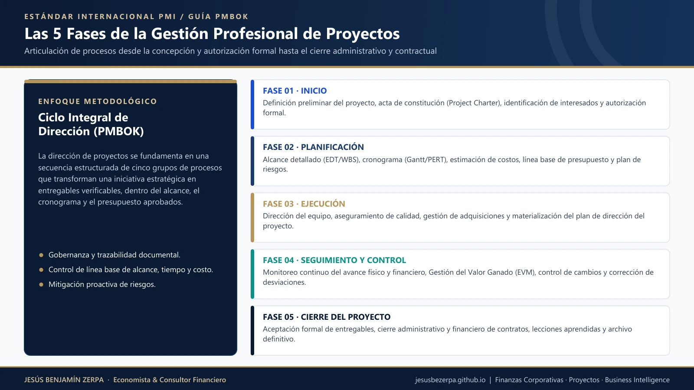
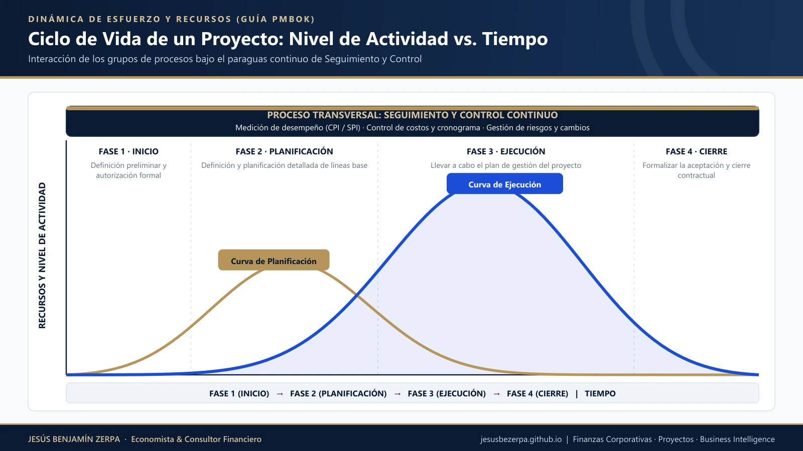
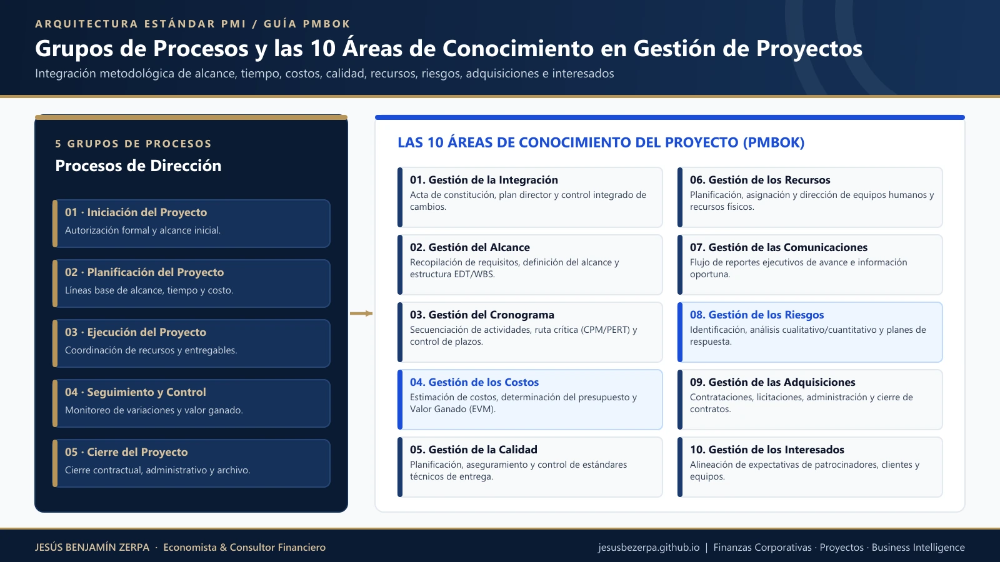
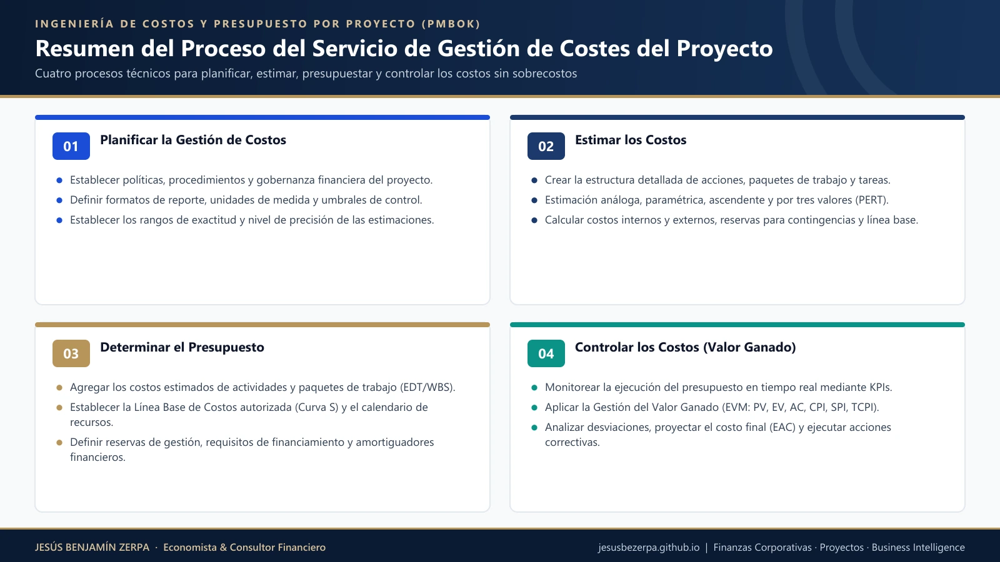
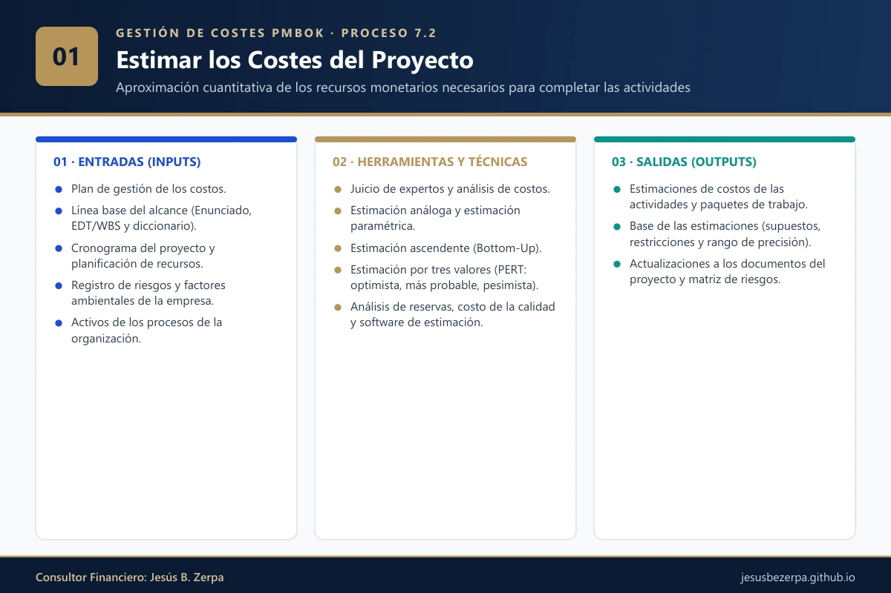
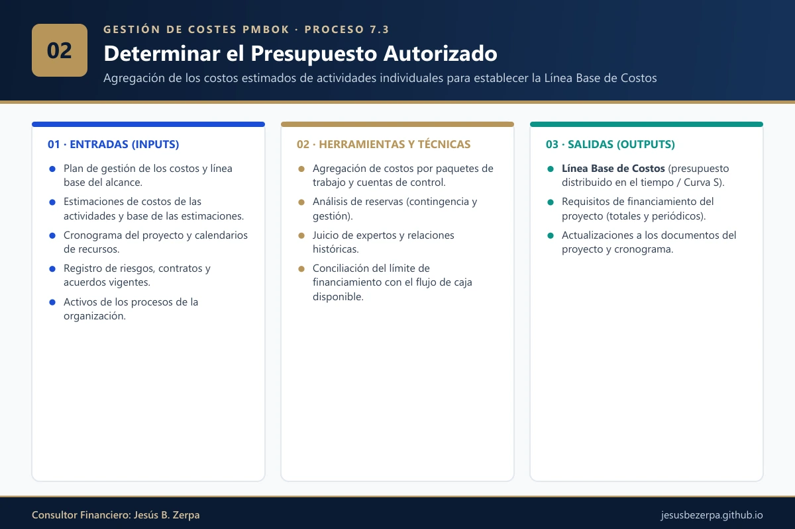
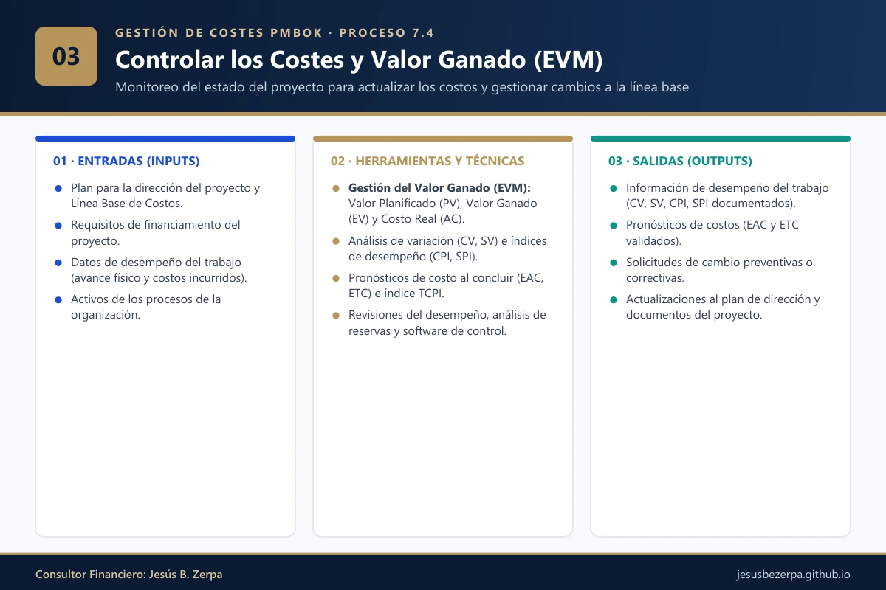
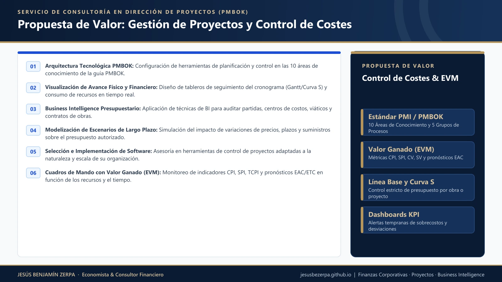

1. ¿Qué es un Consultor en Gestión de Proyectos?
Un consultor en gestión de proyectos es un especialista independiente que actúa como asesor estratégico, planificador y coordinador técnico junto a equipos internos y externos para diseñar, estructurar y controlar proyectos operativos, tecnológicos, financieros o de infraestructura. Constituye un aliado clave para las organizaciones que buscan eliminar ineficiencias, prevenir sobrecostos y asegurar el cumplimiento de los objetivos del negocio.
2. El Proyecto y sus 3 Características Esenciales
Un proyecto constituye la unidad básica de intervención para el desarrollo organizacional: tiene como finalidad satisfacer una necesidad específica o aprovechar una oportunidad estratégica mediante la asignación coordinada de recursos para generar beneficios verificables.
«Un proyecto es un esfuerzo temporal que se lleva a cabo para crear un producto, servicio o resultado único. Comprende una secuencia de actividades interrelacionadas que se ejecutan durante un período definido y dentro de restricciones establecidas de alcance, tiempo, costo, calidad y riesgo».
- Temporalidad: Todo proyecto posee un inicio y un cierre claramente delimitados. El inicio marca la formulación de su acta de constitución, y el cierre se alcanza cuando se entregan formalmente todos los objetivos establecidos.
- Entregables únicos: Cada proyecto produce un resultado singular —tangible o intangible— diseñado para resolver un problema concreto o generar una ventaja competitiva.
- Elaboración progresiva: A medida que el proyecto avanza y se dispone de información más precisa, los planes y estimaciones se refinan mediante iteraciones sucesivas de planificación y control.
3. Las 5 Fases del Ciclo de Vida de la Gestión de Proyectos
La dirección de proyectos integra la aplicación de conocimientos, habilidades, herramientas y técnicas a las actividades del proyecto para cumplir con sus requisitos a través de cinco grupos de procesos:

- 1. Inicio del Proyecto: Se define formalmente el proyecto a nivel ejecutivo, se evalúa su viabilidad preliminar, se identifican los interesados clave (stakeholders) y se autoriza el Acta de Constitución del Proyecto (Project Charter).
- 2. Planificación del Proyecto: Se desarrolla el Plan para la Dirección del Proyecto integrando planes subsidiarios de alcance, cronograma, costos, calidad, recursos, comunicaciones, riesgos y adquisiciones. Incluye la Estructura de Desglose del Trabajo (EDT / WBS), diagramas de hitos, cronogramas Gantt/PERT y reservas de contingencia.
- 3. Ejecución del Proyecto: Se coordinan los recursos humanos, técnicos y financieros para construir los entregables conforme al plan aprobado, gestionando las comunicaciones y el aseguramiento de la calidad.
- 4. Seguimiento y Control: Se ejecuta de forma paralela a la ejecución para medir el desempeño real del alcance, el cronograma y el presupuesto mediante indicadores clave (KPIs y Valor Ganado), aplicando acciones preventivas y correctivas ante cualquier desviación.
- 5. Cierre del Proyecto: Comprende la aceptación formal de los entregables por parte del cliente o patrocinador, el cierre administrativo y financiero de contratos, la liberación de recursos y la documentación de lecciones aprendidas.

4. Las 10 Áreas de Conocimiento en la Gestión de Proyectos (PMBOK)
Mientras que los cinco grupos de procesos describen la progresión cronológica horizontal del proyecto, las diez áreas de conocimiento del estándar PMBOK constituyen las disciplinas técnicas transversales necesarias para una dirección eficaz:

- Gestión de la Integración: Coordina y unifica todos los procesos y actividades de dirección, desde el Acta de Constitución hasta el control integrado de cambios y el cierre.
- Gestión del Alcance: Garantiza que el proyecto incluya todo el trabajo requerido —y únicamente el trabajo requerido— mediante la recopilación de requisitos y la Estructura de Desglose del Trabajo (EDT / WBS).
- Gestión del Cronograma (Tiempo): Define, secuencia y estima la duración de las actividades para establecer y controlar la línea base del cronograma.
- Gestión de los Costos: Planifica, estima, presupuesta, financia y controla los costos para que el proyecto se complete dentro del presupuesto aprobado.
- Gestión de la Calidad: Incorpora las políticas y estándares de calidad de la organización tanto en los procesos de gestión como en los entregables finales.
- Gestión de los Recursos: Identifica, adquiere y dirige los recursos humanos, equipos, materiales e instalaciones necesarios para el éxito del proyecto.
- Gestión de las Comunicaciones: Asegura la generación, distribución y almacenamiento oportuno de la información relevante para todos los actores del proyecto.
- Gestión de los Riesgos: Identifica, analiza cualitativa y cuantitativamente los riesgos y estructura planes de respuesta para mitigar amenazas y potenciar oportunidades.
- Gestión de las Adquisiciones (Contratos): Administra los procesos de compra o contratación de productos, obras o servicios externos, garantizando el cumplimiento técnico y legal de los proveedores.
- Gestión de los Interesados (Stakeholders): Identifica a las personas u organizaciones afectadas por el proyecto y gestiona sus expectativas y participación activa.
5. ¿Por qué es Necesario un Consultor en Gestión de Costes de Proyecto?
La Gestión de los Costos del Proyecto es el proceso de estimar, presupuestar y controlar los desembolsos a lo largo de todo el ciclo de vida del proyecto con el objetivo de mantener la ejecución dentro del presupuesto autorizado. Para que un proyecto sea verdaderamente exitoso debe cumplir simultáneamente cuatro condiciones: (1) satisfacer el alcance y los requisitos técnicos, (2) alcanzar un alto estándar de calidad, (3) completarse dentro del cronograma y (4) ejecutarse dentro del presupuesto aprobado.
Al implementar prácticas profesionales de gestión de costos, la gerencia logra:
- Establecer una línea base financiera transparente y auditable ante socios, juntas directivas y clientes.
- Prevenir la desviación no controlada del alcance (scope creep) mediante el control riguroso de órdenes de cambio.
- Monitorear el avance físico frente al gasto financiero real y activar medidas correctivas de forma inmediata.
- Proteger el margen operativo esperado, maximizar el retorno sobre la inversión (ROI) y evitar sobrecostos.
- Construir bases de datos históricas de costos unitarios para optimizar la presupuestación de proyectos futuros.

6. Los 3 Procesos Clave de la Gestión de Costes (PMBOK)

Desarrollo de una aproximación cuantitativa de los recursos monetarios necesarios para completar cada actividad del proyecto, evaluando alternativas tecnológicas, costos directos e indirectos y reservas para contingencias.

Agregación de los costos estimados de las actividades individuales o paquetes de trabajo de la EDT/WBS para establecer una Línea Base de Costos autorizada contra la cual se medirá el desempeño financiero.

Monitoreo continuo del estado del proyecto para actualizar el presupuesto, registrar los costos reales incurridos, gestionar cambios a la línea base de costos y calcular indicadores de Valor Ganado (CPI, SPI, EAC y VAC).
7. Propuesta de Valor del Servicio

8. Preguntas Frecuentes (FAQ)
¿Por qué se utiliza la Gestión de Proyectos formal?
¿Qué es el PMBOK en la Gestión de Proyectos?
¿Cuál es el rol de un Director de Proyectos (Project Manager)?
¿Qué es la Gestión del Valor Ganado (EVM)?
¿Qué son las herramientas Gantt, PERT y los criterios SMART?
- Diagrama de Gantt: Representación gráfica matricial del cronograma del proyecto que muestra la duración, secuencia, dependencias e hitos de cada paquete de trabajo.
- Técnica PERT (Program Evaluation and Review Technique): Modelo probabilístico de redes que estima la duración esperada de las actividades (considerando escenarios optimista, más probable y pesimista) y determina la Ruta Crítica del proyecto.
- Criterios SMART: Metodología para formular objetivos de proyecto que sean Específicos, Medibles, Alcanzables, Relevantes y con un Tiempo definido.